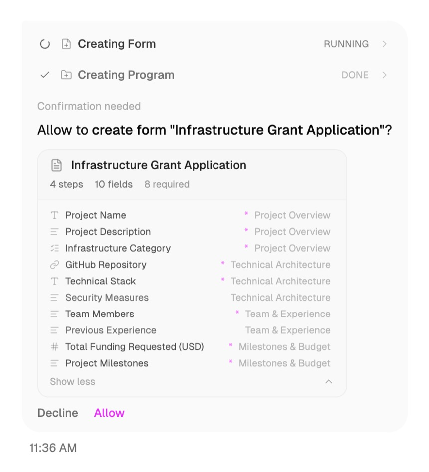
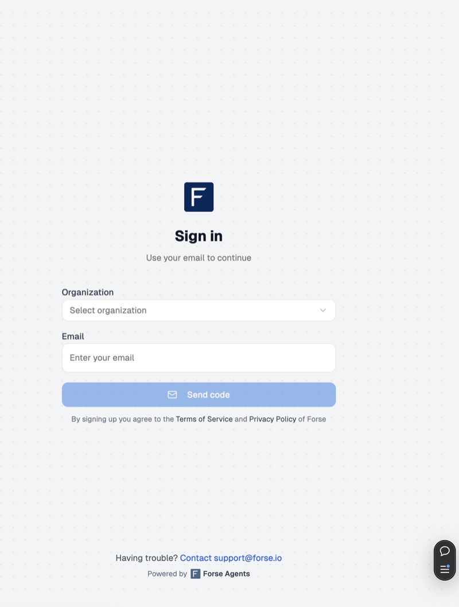
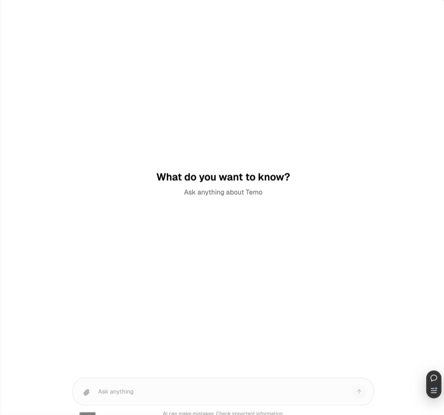
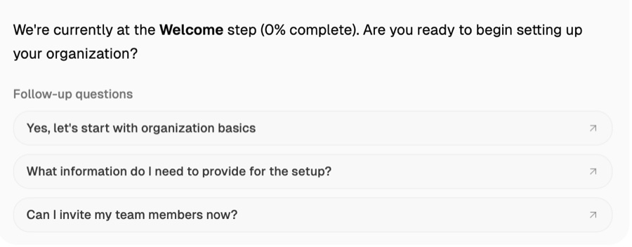
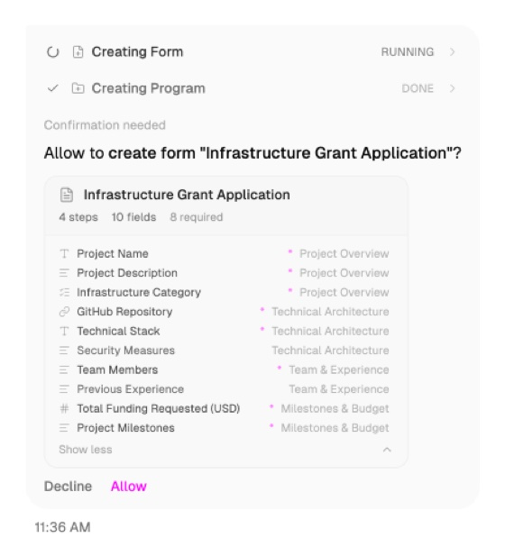
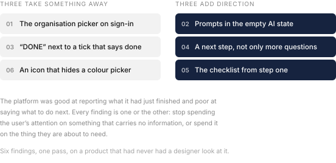

Forse Agents
2026
Forse Grants Management runs a grant programme with agents, from intake and scoring to milestone checks and payout, with a person approving each step. It had been built end to end, shipped to real programmes, and never once looked at by a designer. This is the first pass.1
A product nobody had designed
The core idea was good. You tell the agent what you want, it proposes the thing, and nothing happens until you approve it. Create a programme called Cat friendly environment fund. Build an application form with ten fields across four steps. Decline or Allow.

I did not touch that gate, and I wrote down why. The handbook StableLab published for these programmes states it as a rule: human judgment stays in the loop, repetitive triage becomes automatic. It also separates the people who run a programme from the people who judge applications and the people who approve capital, because programmes where one group does all three are, in its words, decentralised in name only. An agent that acted without an Allow button would fold those three roles into one prompt. Grant programmes here move real money, around $150 million across Arbitrum’s alone since 2023, so the button stays.2
What was missing is the layer a designer would have added on the way past: the small decisions about what to ask for, what to say, and when to say it. So I went through sign-in, onboarding and the agent conversation and wrote down six.
What to take away
Sign-in asked you to pick your organisation from a dropdown before it would take your email. Nearly everyone here belongs to exactly one organisation, and nearly everyone arrives through a whitelisted email invitation, so the system already knew the answer it was asking for. I recommended removing the field.


The completed agent steps carried a tick and the word DONE. The tick already says done, so I cut the word. And on the branding step, a plain rectangle stood in for a full colour picker, so the control looked like a swatch you choose from rather than a wheel you open. I swapped the icon.
What to add
The screen on the right above is where a new user meets the agent for the first time. It said “What do you want to know?” and then left them with an empty input. Anybody who has not used a product like this before has no idea what it can be asked, so I wrote a few starter prompts to turn the blank page into a menu.

After each agent turn you got follow-up questions, which are things you could ask. What you did not get was the next step, which is the thing you should do. I added it. Both are worth having and they do different jobs: one keeps a conversation going, the other finishes a task.
And the ten step setup checklist, the single clearest picture of how much work is left, only appeared once the organisation details step was complete. I moved it to the start, when the user has no idea what they have signed up for and needs it most.

The pattern underneath

When I sorted the six, they stopped being a list of nitpicks. Three of them take away something that carries no information: a question the system can answer itself, a word that repeats an icon, an icon that misdescribes a control. Three of them add direction at the exact moment the user is deciding what to do next.
The platform was fluent at reporting what it had just finished and quiet about what to do next. That is what software built without a designer usually sounds like, because the people building it always already know.
None of these were expensive. Removing a dropdown, writing four prompts, moving a component earlier in a sequence. That is what I find useful about looking at a product late rather than never: the cheapest fixes are still sitting there, and somebody just has to notice them.
- A short audit rather than a redesign. The screenshots here are the ones in the audit itself, taken from the live product.
- The role separation and the figure are from the architecture and context chapters of the Forse Grants Handbook. What the agents do across intake, evaluation, monitoring and reporting is chapter six.